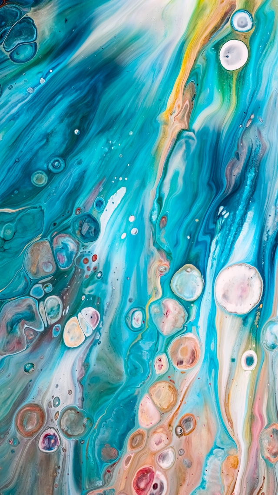

Image Style
Images are inline elements. To make styling easier, you can make them display as block elements using CSS.
Form
Just like images and links, form elements display inline by default. Remembering this makes them much easier to style with CSS.
If you would like more information, please fill out the form below. Required fields are marked with an asterisk (*).
List Styling
We use ordered and unordered lists in many places on the web. With CSS selectors, you can target each item individually if you need to. You can also use CSS to change the marker (number or bullet) used by default.
- Item One
- Item Two
- Item Three
More Styling
Below there are five nested divs. Using different CSS selectors, we can style each one in a specific way after we've added any styles that we want them all to share. The Cascade allows us to give all elements that match a selector some styles, then choose others in a more specific way to change just what we need to.
GIT Software Links
You can use CSS to style any of the elements on your page, including changing the fill and/or stroke color on SVGs (which are graphics that are drawn on your page with math, meaning that they will use the same file size no matter how large they are when displayed on your pages).
Software used in GIT
Table Styling
Tables aren't difficult to style, the part of designing one that takes the most time is likely the actual coding and deciding how rows and columns need to span. CSS Selectors allow us to give the rows alternating colors quickly and easily.
| Question | Women | Men | ||
|---|---|---|---|---|
| Yes | No | Yes | No | |
| Question 1 | 42% | 58% | 61% | 39% |
| Question 2 | 53% | 47% | 69% | 31% |
| Question 3 | 26% | 74% | 51% | 49% |
| Average | 40% | 60% | 60% | 40% |
CSS Borders
You can use borders in CSS in many ways. They can be decorative, or they can be used to communicate something to the user. You can add a border to each side, or all sides, and everything in between. Borders can also be given a radius to round the corners.
CSS Pseudo-Elements
In CSS, you can add decorative content to your elements by using CSS pseudo-elements. Although these aren't something you have to add to your HTML, the browser allows you to treat them like other elements.